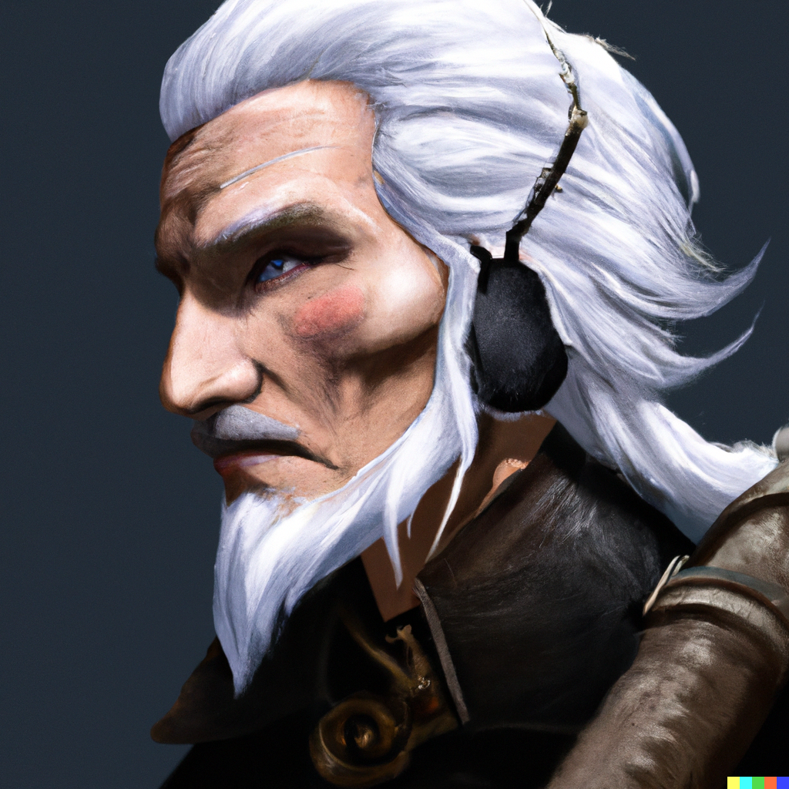
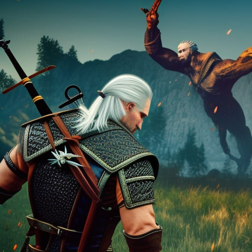

=> Geralt avait du mal à comprendre ce monde d'où il venait, beaucoup d'écriture, de films (publicités), une atmosphère constante de chaos,

Geralt décide de faire quelque chose dans ce monde d'où il vient,
mais il était clair qu'il y avait de monstres dans un tel monde.
Pendant qu'il était sur cette route, il s'est rendu compte que l'objet le plus utile était l'épée et que la voie à suivre était le logiciel.
Geralt savait qu'il serait confronté à de nombreux problèmes en cours de route, mais comme il ne savait pas ce qui se passerait dans ce processus éducatif il avait des soucis,
le développeur de jeux Web ou un développeur de jeux qu'il voulait être à l'avenir décorerait ses rêves.
À la fin de cette formation, il a décidé de travailler longtemps, d'économiser de l'argent et de réaliser ses rêves,
de rappeler aux gens les jeux auxquels il jouait avant d'être pris par Vesemir à sa famille et de montrer à quel point ils étaient géniaux.
=> Geralt ne savait pas quelle forme pourraient prendre les créatures qu'il rencontrerait sur ce chemin.
Il se promenait dans un village d'algorithmes lorsqu'il a vu une annonce et a frissonné et s'est réjoui de ce qu'il avait lu, de son ancien travail et de l'argent pour son nouveau travail,
Fonction créature :

-> Toute personne ayant un physique très commun et fort le confondra avec la créature portant un nom similaire,
-> Il a une peau très utile, il n'a pas besoin d'être compilé comme ses propres congénères.
-> 2,7 mètres de haut
-> Il a une caractéristique telle qu'attirer (rechercher l'attention et l'amour), faire tomber quelqu'un amoureux de lui-même.
=> Pensant que cela faisait partie de l'entraînement, Geralt apprit ce contrat,demandant.
où il apparaissait, comment il attaquait, et à quoi il ressemblait.
Parce qu'il savait que les paysants ne pas toujours dire le vrai descriptions de monstre.
Après un combat de 2 heures (2 semaines selon nous) avec ce monstre,
il a réussi à le vaincre, mais il a aussi reçu de grosses blessures.
Il continuerait son chemin, se demandant ce qui arriverait à la fin de ce voyage...